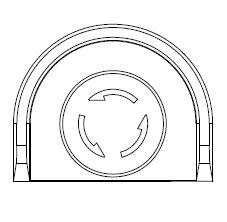
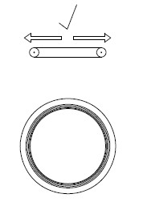
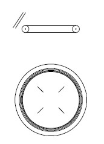
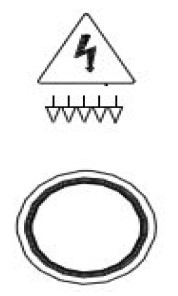
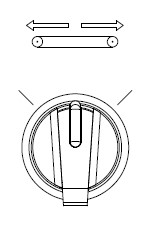
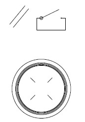
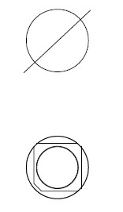
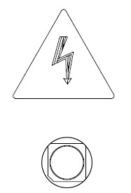

ITEM |
NAME |
DESCRIPTION |
FUNCTION |
|
|---|---|---|---|---|
1 |
 |
E-Stop |
Red Push-Button on Yellow Background- Turn to Release Button |
Function: Push to stop all machine motion. Control Power and Automatic turn off (if applicable). Machines come to an immediate stop. Turn button to release from E-Stop before pressing the Line E-Stop Reset Button. |
2 |
 |
Knife Outfeed Carriage Rollout Enable |
Black Push-Button |
Function: Push in conjunction with Knife Outfeed Carriage In/Out Selector Switch to move the knife outfeed carriage. Button is active when the Knife Outfeed Access Request button has been pressed and the Knife Outfeed Carriage Circuit OK indicator is off. |
3 |
 |
Knife Outfeed Carriage Circuit OK |
Blue Illuminated Pilot Light |
Function: Light turns on when the Knife Outfeed carriage is fully extended into run position. Light turns off when the zone is violated. Carriage must be in fully extended position to be able to operate the Knife Outfeed belts and Knife cylinders. |
4 |
 |
Knife Outfeed Access Request |
Black Push-Button |
Function: Push to turn off the bus for the Knife cylinder drives. Once the bus is detected to be below a safe voltage, the Knife Outfeed carriage is able to be moved, allowing access to the Knife cylinders. |
5 |
 |
Knife Outfeed Carriage In/Out |
Function: Turn switch in conjunction with Knife Outfeed Carriage Rollout Enable Push-Button to move Knife Outfeed carriage toward or away from knife. Switch is active when the Knife Outfeed Access Request button has been pressed and the Knife Outfeed Carriage Circuit OK light is off. |
|
6 |
 |
Knife Outfeed Access Door Reset |
Function: After verifying no one is within the knife outfeed safety zone, push to reset the Knife Outfeed access door safety circuit. Machine function is suspended, and the light turns off when zone is violated. Light flashes when zone is ready to be reset. Light turns on solid when zone is reset. |
|
7 |
 |
Knife Cylinder Drive 3-phase Voltage Indicator |
Function: Light turns on when 3-phase voltage is present on the associated Knife cylinder drive. Contact maintenance if LED is off during normal operation or LED remains on for 30 seconds after turning off Knife cylinder drive bus. |
|
8 |
 |
Knife Cylinder Drive Bus Voltage Indicator |
Function: Light turns on when high voltage DC bus voltage is present on the associated Knife cylinder drive. Contact maintenance if LED is off during normal operation or LED remains on for 30seconds after turning off Knife cylinder drive bus. |